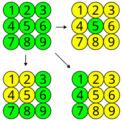

Não. Se \(a\) e \(b\) tiverem paridades diferentes então um dos dois é par, de forma que \(a\cdot b\) par. Mas isso é uma contradição já que \(45045\) é ímpar. Agora, se \(a\) e \(b\) tiverem a mesma paridade então \(a-b\) deve ser par e do mesmo modo chegamos a uma contradição. Logo, não há solução inteira.
Exemplo3.1.2.(Leningrado 1990).
Paula comprou um caderno com 96 folhas, com páginas enumeradas de 1 a 192. Nicolas arrancou 25 folhas aleatórias e somou todos os 50 números escritos nestas folhas. É possível que esta soma seja 1990?
Observe que a soma dos números escritos em uma mesma folha sempre é ímpar. Dessa forma, se Nicolas arrancou 25 folhas, a soma de todos os números será ímpar. Pois é a soma de uma quantidade ímpar de números ímpares. Logo, esta soma não pode ser 1990.
Exemplo3.1.3.
Um gafanhoto vive na reta coordenada. Inicialmente, ele se encontra no ponto 1. Ele pode pular 1 ou 5 unidades, tanto para direita quanto para esquerda. Porém, a reta coordenada possui buracos em todos os pontos que são múltiplos de 4 (i.e. existem buracos nos pontos -4, 0, 4, 8 etc), então ele não pode pular para estes pontos. Pode o gafanhoto chegar ao ponto 3 após 2003 saltos?
Note que a cada salto, muda a paridade do ponto em que o gafanhoto se encontra. Logo, após 2003 saltos, ele estará em uma coordenada par. Portanto, não pode ser 3.
Exemplo3.1.4.
No reino da Frutilândia existe uma árvore mágica que possui 2005 maçãs e 2006 tomates. Todo dia um garoto sobe na árvore e come duas frutas. Quando ele come duas frutas iguais, nasce um tomate na árvore; quando ele come duas frutas diferentes, nasce uma maçã. Após alguns dias restará apenas uma fruta na árvore. Que fruta será?
Sempre que o garoto como dois tomates, o número de tomates diminui 1. Quando ele come duas maçãs, o número de tomates aumenta 1. E quando ele come uma fruta de cada tipo, o número de tomates diminui 1. Assim, a paridade do número de tomates sempre muda em cada etapa.
Quando o garoto pega duas frutas da árvore, o número de maçãs diminuirá de 2 ou permanecerá constante. Dessa forma a paridade do número de maçãs será sempre o mesmo. Como inicialmente tínhamos um número ímpar de maçãs, a quantidade delas continuará ímpar até o final. Logo, a última fruta deve ser uma maçã.
Exemplo3.1.6.
Um jogo consiste de 9 botões luminosos (de cor verde ou amarelo) dispostos da seguinte forma:

Figura3.1.7.
Apertando um botão do bordo do retângulo, trocam de cor ele e os seus vizinhos (do lado ou em diagonal). Apertando o botão do centro, trocam de cor todos os seus oito vizinhos, porém ele não. Inicialmente todos os botões estão verdes. É possível, apertando sucessivamente alguns botões, torná-los todos amarelos?
Note que ao apertar um dos botões 1, 3, 7 ou 9 trocamos de cor 4 botões. Apertando um dos botões 2, 4, 6 ou 8 trocamos a cor de 6 botões. Apertando o botão do centro trocamos a cor de 8 botões. Como 4, 6 e 8 são números pares a quantidade total de botões verdes é sempre um número ímpar e para ter os 9 botões amarelos, deveríamos ter zero botões verdes. Absurdo, já que 0 é um número par.
Exemplo3.1.8.(Leningrado 1989).
Um grupo de K físicos e K químicos está sentado ao redor de uma mesa. Alguns deles sempre falam a verdade e outros sempre mentem. Sabe-se que o número de mentirosos entre os físicos e químicos é o mesmo. Quando foi perguntado: "Qual é a profissão de seu vizinho da direita?", todos responderam "Químico." Mostre que K é par.
A única forma de alguém ter um Físico à sua direita é sendo um mentiroso. Como as pessoas estão sentadas em círculo, todo Físico tem exatamente uma pessoa sentada imediatamente à sua esquerda. Pela nossa regra, essa pessoa à esquerda precisa ser mentirosa.
Isso cria uma correspondência exata (uma bijeção): para cada Físico na roda, existe de forma única e exclusiva um mentiroso sentado à sua esquerda. Consequentemente, o número total de Físicos é igual ao número total de mentirosos na mesa. Como o problema define que existem \(K\) Físicos no total, concluímos que:
\begin{equation*}
\text{Total de Mentirosos} = K
\end{equation*}
Definindo os mentirosos físicos como \(M_F\) e os mentirosos químicos como \(M_Q\text{,}\) temos a igualdade:
\begin{equation*}
M_F = M_Q
\end{equation*}
O total de mentirosos na mesa é
\begin{equation*}
K = \text{Total de Mentirosos} = M_F + M_Q = 2M_F
\end{equation*}
Então, \(K\) é par.
ExercíciosProblemas Propostos
1.
Os números \(1,2,...,n\) estão escritos em sequência. É permitido permutar quaisquer dois elementos. É possível retornar à posição inicial após 2001 permutações?
Dizemos que uma sequência tem uma inversão quando um número maior vem antes de um número menor. O número de inversões de uma sequência é o número de pares \((a, b)\) com \(a \gt b\) que podemos encontrar na sequência tais que \(a\) aparece antes de \(b\text{.}\) Por exemplo, o número de inversões da sequência \((1,3,2,5,4)\) é 2.
Note que ao permutarmos 2 números, a paridade do número de inversões muda.
No problema, a sequência inicial tem 0 inversões. Como são feitas 2001 permutações, temos 2001 mudanças de paridade do número de inversões. Dessa forma, o número de inversões final deve ser ímpar. Então não podemos ter, ao fim, a sequência inicial.
2.
Um círculo está dividido em seis setores que estão marcados com os números \(1,0,1,0,0,0\) no sentido horário. É permitido somar \(1\) a dois setores vizinhos. É possível, repetindo esta operação várias vezes, fazer com que todos os números se tornem iguais?
Suponha que os números nos setores sejam \(a_{1}, a_{2}, a_{3}, a_{4}, a_{5}\) e \(a_{6}\) no sentido horário. Vamos chamar de \(S\) o módulo do número \(a_{1}-a_{2}+a_{3}-a_{4}+a_{5}-a_{6}\text{.}\) Note que ao somar 1 a dois setores vizinhos o valor de \(S\) não se altera. Então \(S=1-0+1-0+0-0=2\text{.}\) Desse modo, é impossível que todos os números sejam iguais pois teríamos \(S=0\text{.}\)
3.
É possível que as seis diferenças entre dois elementos de um conjunto de quatro números inteiros serem iguais a \(2, 2, 3, 4, 4\) e \(6\text{?}\)
Não. Imagine que o conjunto seja \(\{a, b, c, d\}\text{.}\) Então podemos supor \(3=a-b\text{.}\) Mas \(a-b=(a-c)+(c-b)\) e \(a-c\) e \(c-b\) são diferenças de dois elementos do conjunto. Porém, todas as diferenças, com exceção de 3, são pares. Logo, \((a-c)+(c-b)\) é par. Isso é uma contradição já que esse valor é igual a 3 que é ímpar. Concluímos que não é possível que as diferenças sejam essas.
4.
Raul falou que tinha dois anos a mais que Kátia. Kátia falou que tinha o dobro da idade de Pedro. Pedro falou que Raul tinha 17 anos. Mostre que um deles mentiu.
Suponha que ninguém mentiu. Então Raul tem 17 anos e portanto Kátia tem 15 anos. Mas Kátia tem o dobro da idade de Pedro e, portanto, sua idade deve ser par, contradição. Logo, alguém deve ter mentido.
5.
(Torneio das Cidades 1987) Uma máquina dá cinco fichas vermelhas quando alguém insere uma ficha azul e dá cinco fichas azuis quando alguém insere uma ficha vermelha. Pedro possui apenas uma ficha azul e deseja obter a mesma quantidade de fichas azuis e vermelhas usando essa máquina. É possível fazer isto?
Não. Observe que quando Pedro insere uma ficha e recebe cinco seu número de fichas aumenta 4 unidades. Logo, a paridade do número de fichas não muda. Para ter a mesma quantidade de fichas azuis e vermelhas Pedro deve ter um número par de fichas, mas isso não é possível já que ele inicialmente só possui 1 ficha e 1 é ímpar.
6.
(China 1986) Considere uma permutação dos números \(1, 1, 2, 2, ..., 1998, 1998\) tal que entre dois números k existem k números. É ou não possível fazer isto?
Contados da esquerda para a direita, denotemos por \(a_{k}\) e \(b_{k}\) as posições do primeiro e segundo número \(k\text{,}\) respectivamente. Note que \(1 \le a_{k} \lt b_{k} \le 2\times 1998\text{.}\) Como existem \(k\) números entre dois números \(k\)'s, devemos ter \(b_{k}-a_{k}=k+1\text{.}\) Se é possível escrever os números \(1,1,2,2,...,n,n\) em linha como no enunciado, obtemos:
Logo, a fração \(\frac{5n(n+1)}{2}\) deve ser um inteiro par. Para \(n=1998\text{,}\)\(\frac{5n(n+1)}{2}=9985005\) é ímpar e consequentemente não é possível dispormos esses números em linha.
7.
(Rússia 2004) É possível colocarmos números inteiros positivos nas casas de um tabuleiro \(9\times 2004\) de modo que a soma dos números de cada linha e a soma dos números de cada coluna sejam primos? Justifique sua resposta.
Suponha que seja possível fazer tal construção. Sejam \(L_{1},L_{2},...,L_{9}\) as somas dos números de cada uma das 9 linhas, e \(C_{1},C_{2},...,C_{2004}\) as somas dos números de cada uma das 2004 colunas. Como cada \(L_{i}\) e \(C_{j}\) são primos, estes devem ser números ímpares (já que são soma de pelo menos nove inteiros positivos e portanto são maiores que 2). Seja S a soma de todos os números do tabuleiro. Por um lado teríamos:
e daqui concluímos que S é par, pois é uma soma de uma quantidade par de ímpares, o que é um absurdo. Logo, tal construção não é possível.
8.
O número A possui 17 dígitos. O número B possui os mesmos dígitos de A, porém em ordem inversa. É possível que todos os dígitos de \(A+B\) sejam ímpares?
Não. Vamos mostrar que algum dos dígitos deve ser par. Considere a seguinte soma e se \(r_{8}\) for par (teríamos \(r_{8}=2a_{8}-10k\)) então o problema acaba. Suponha então que isso não ocorre. A única possibilidade é a de que a soma anterior ficou maior do que ou igual a 10 e 1 foi adicionado a soma dos \(a_{8}\text{.}\) Temos dois casos:
\(a_{7}+a_{9}=9\) e a soma deles (acima de \(r_{7}\)) recebeu um 1 da soma anterior, isso implicaria que \(r_{7}=0\) e o problema acabaria aqui;
o segundo caso é \(a_{7}+a_{9}\ge 10\text{.}\)
Vamos então supor que \(a_{7}+a_{9}\ge 10\text{.}\) Repare que se \(a_{7}+a_{9}\ge 10\) então \(r_{10}=a_{10}+a_{6}+1-10k\text{.}\) Se \(r_{10}\) e \(r_{6}\) tiverem paridades diferentes, um dos dois será par e então o problema acaba. Vamos supor que isso não ocorre. Para que isso não ocorra, a soma acima de \(r_{6}\) também deve receber um 1 da soma anterior. Dessa forma, analogamente como fizermos com \(a_{7}+a_{9}\text{,}\) podemos supor que \(a_{5}+a_{11}\ge 10\text{.}\) Usando o mesmo argumento de paridades diferentes entre \(r_{12}\) e \(r_{4}\) chegamos a suposição de que \(a_{3}+a_{13}\ge 10\text{.}\) Repetindo mais uma vez esse processo nós chegamos em \(a_{1}+a_{15}\ge 10\text{.}\) Com isso, nós concluímos que a soma acima de \(r_{16}\) receberá um 1 da soma anterior que é a de \(a_{15}+a_{1}\text{.}\) Isso quer dizer que \(r_{16}=a_{16}+a_{0}+1-10k\text{.}\) Porém, como não há soma antes de \(r_{0}\text{,}\) devemos ter \(r_{0}=a_{0}+a_{16}-10k'\text{.}\) Note que \(r_{0}\) e \(r_{16}\) têm paridades diferentes e então algum dos dois é par. Isso conclui a demonstração. Repare que esses argumentos valem para qualquer natural com um número ímpar de dígitos, basta que exista o dígito do meio nesse caso é o \(a_{8}\text{.}\)
9.
*Considere um tabuleiro \(1998\times 2002\) pintado alternadamente de preto e branco da maneira usual. Em cada casa do tabuleiro, escrevemos 0 ou 1, de modo que a quantidade de 1's em cada linha e em cada coluna do tabuleiro é ímpar. Prove que a quantidade de 1's escritos nas casas brancas é par.
Seja \(a_{i,j}\) o número escrito na casa da i-ésima linha e da j-ésima coluna, \(1\le i\le 1998\) e \(1\le j\le 2002\text{.}\) A casa (i, j) é branca se e somente se i e j possuem a mesma paridade.
é a soma dos números nas 999 linhas de ordem ímpar. Como a soma dos números de cada linha é ímpar, L é ímpar. De maneira análoga, a soma dos números nas 1001 colunas de ordem par
também é ímpar. Seja P o conjunto de todas as casas pretas que estão em colunas de ordem par, e \(S(P)\) a soma de todos os números escritos nas casas de P. Cada número escrito em uma casa de P aparece exatamente uma vez na soma L e exatamente uma vez na soma C. Ademais, cada número escrito em uma casa branca aparece exatamente uma vez na soma \(L+C\text{.}\) Assim, a soma dos números escritos nas casas brancas é igual a \(L+C-2S(P)\) que é par.
10.
*(Ucrânia 1997) Considere um tabuleiro pintado de preto e branco da maneira usual e, em cada casa do tabuleiro, escreva um número inteiro, de modo que a soma dos números em cada coluna e em cada linha é par. Mostre que a soma dos números nas casas pretas é par.
A solução é análoga à do problema anterior. A casa \((i, j)\) é a casa da i-ésima linha e j-ésima coluna. A casa \((i, j)\) é preta se e somente se i e j têm paridades diferentes. Seja \(L_{k}\) e \(C_{k}\) a soma dos números nas k-ésima linha e coluna respectivamente. Então,
é a soma das colunas também de ordem ímpar. Como a soma dos números em cada coluna e em cada linha é par, \(L\) e \(C\) devem ser pares. Seja B o conjunto de todas as casas brancas em colunas de ordem ímpar, e \(S(B)\) a somas dos números escritos nas casas de B. Cada casa de B é contada uma vez em C e uma vez em L. Além disso, cada casa preta é contada exatamente uma vez na soma \(L+C\text{.}\) Logo, a soma dos números nas casas pretas é \(L+C-2S(B)\) que é par.